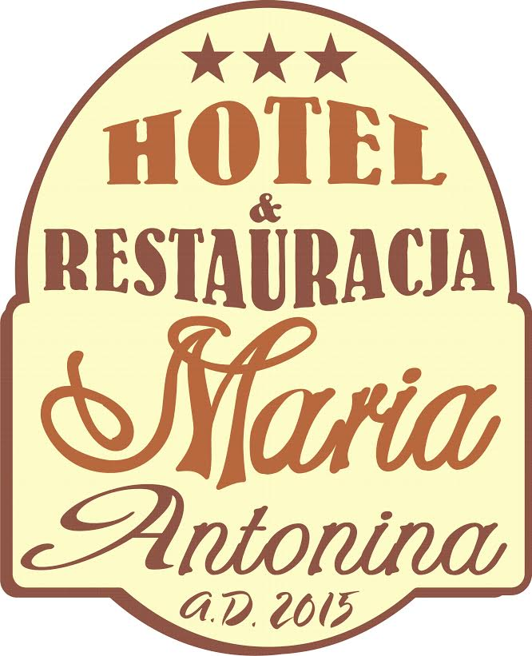
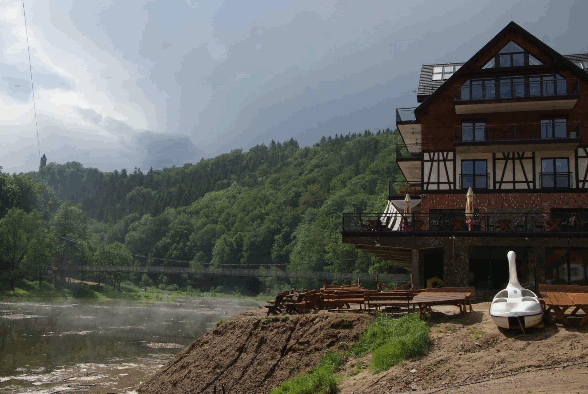

Hotelu i Restauracji Maria od 11 lat działa na rynku wałbrzyskim.
Dziś trudno wyobrazić sobie miasto bez kompleksu, który zapewnia noclegi, bazę gastronomiczną oraz profesjonalną obsługę klienta biznesowego i indywidualnego. Hotel i Restauracja Maria mieści się w Wałbrzychu, przy ul. Wrocławskiej 134b. To trasa wylotowa w kierunku Wrocławia, skąd blisko do największych miejskich atrakcji – Zamku Książ i Palmiarni. Takie położenie gwarantuje łatwy dojazd i dodatkowe atrakcje, zaś oddalenie od Śródmieścia, zapewnia Gościom prywatność, a kompleksowi spójność i możliwość rozwoju. Od strony ulicy widać jedynie niewielką część tego dużego, kilkuhektarowego centrum, przypominającego niezależne miasteczko. Hotel zaczął działać w 2002 roku razem z restauracją. Podczas dekady obiekt rozrastał się i sukcesywnie powstawały jego kolejne sale bankietowe i konferencyjne, a także inne miejsca usługowe, jak restauracja japońska, kręgielnia.
